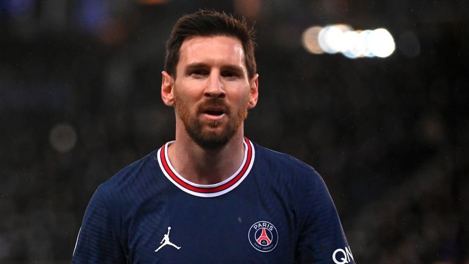

Cristiano Ronaldo dos Santos Aveiro GOIH ComM (Portuguese pronunciation: [kɾiʃˈtjɐnu ʁɔˈnaɫdu]; born 5 February 1985) is a Portuguese professional footballer who plays as a forward for Premier League club Manchester United and captains the Portugal national team. Often considered the best player in the world and widely regarded as one of the greatest players of all time, Ronaldo has won five Ballon d'Or awards[note 3] and four European Golden Shoes, the most by a European player. He has won 32 trophies in his career, including seven league titles, five UEFA Champions Leagues, one UEFA European Championship and one UEFA Nations League. Ronaldo holds the records for most appearances (181), most goals (140) and assists (42) in the Champions League, most goals in the European Championship (14), most international goals by a male player (115), and most international appearances by a European male (184). He is one of the few players to have made over 1,100 professional career appearances, and has scored over 800 official senior career goals for club and country

lionel messi
Lionel Andrés Messi[note 1] (Spanish pronunciation: [ljoˈnel anˈdɾes ˈmesi] (audio speaker iconlisten); born 24 June 1987), also known as Leo Messi, is an Argentine professional footballer who plays as a forward for Ligue 1 club Paris Saint-Germain and captains the Argentina national team. Often considered the best player in the world and widely regarded as one of the greatest players of all time, Messi has won a record seven Ballon d'Or awards,[note 2] a record six European Golden Shoes, and in 2020 was named to the Ballon d'Or Dream Team. Until leaving the club in 2021, he had spent his entire professional career with Barcelona, where he won a club-record 35 trophies, including ten La Liga titles, seven Copa del Rey titles and four UEFA Champions Leagues. A prolific goalscorer and creative playmaker, Messi holds the records for most goals in La Liga (474), a La Liga and European league season (50), most hat-tricks in La Liga (36) and the UEFA Champions League (8), and most assists in La Liga (192), a La Liga season (21) and the Copa América (17). He also holds the record for most international goals by a South American male (80). Messi has scored over 750 senior career goals for club and country, and has the most goals by a player for a single club.